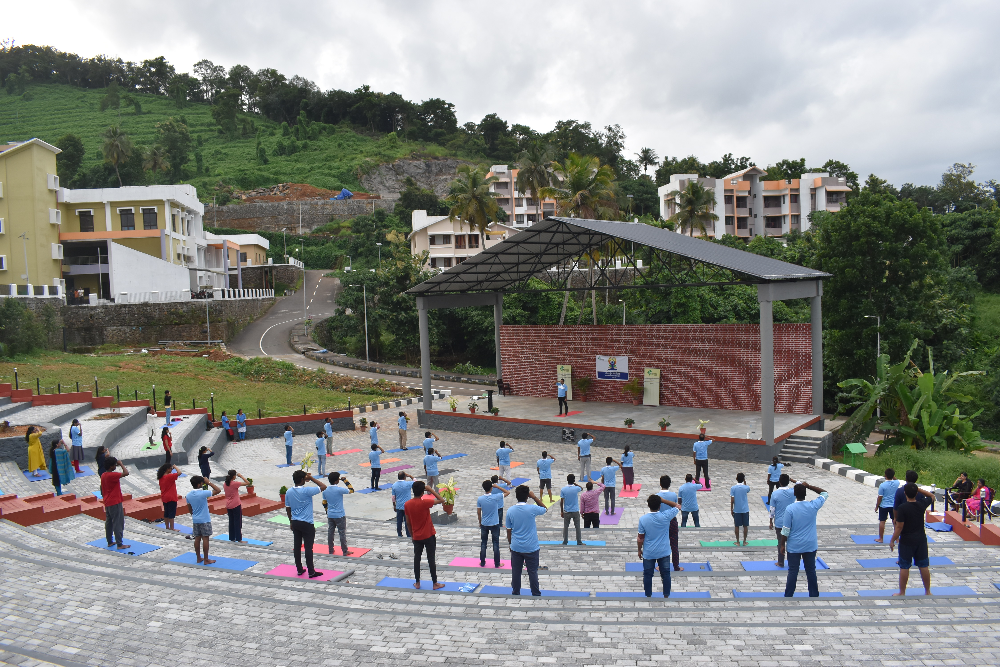
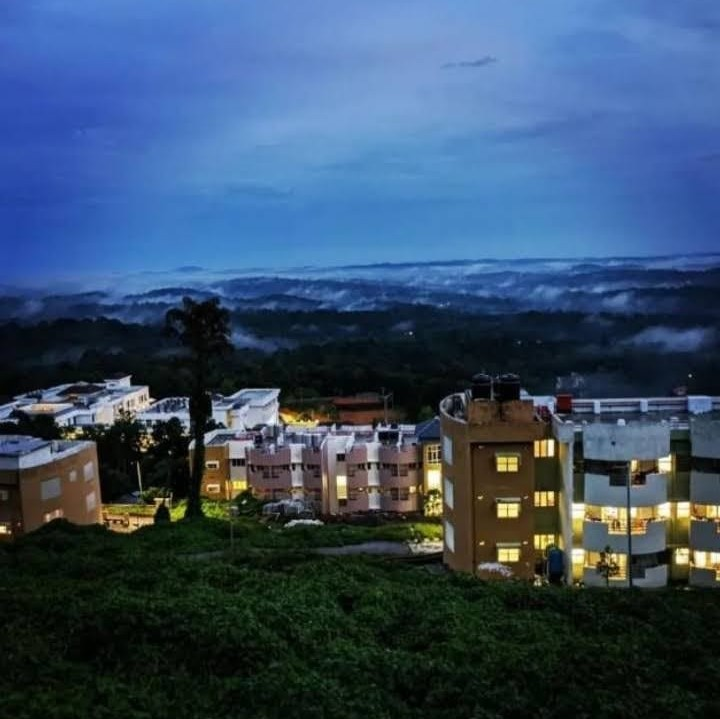

IIIT Kottayam Welcomes You
Indian Institute of Information Technology, Kottayam at Valavoor, Pala, Kerala is one among the IIITs that have been established as "Institutions of National Importance" by Ministry of Education, Govt. of India under the ambit of IIIT (PPP) Act 2017. IIIT Kottayam campus is situated at Valavoor, Pala, Kottayam - a picturous location, spread over in 53 acres of land - allotted by Govt. of Kerala in the southern part of the state commonly referred to as God's Own Country.
The institute offers 4 year B.Tech and B.Tech (Hons) program namely: